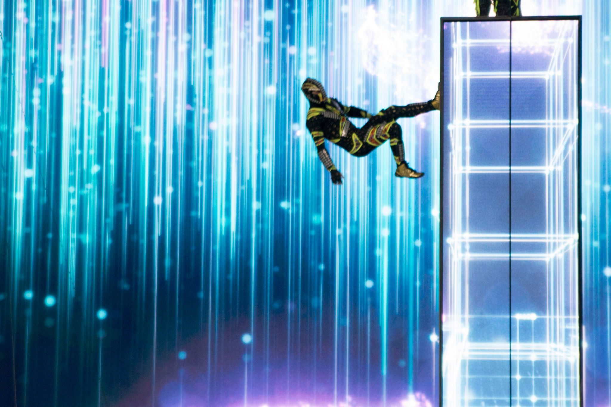
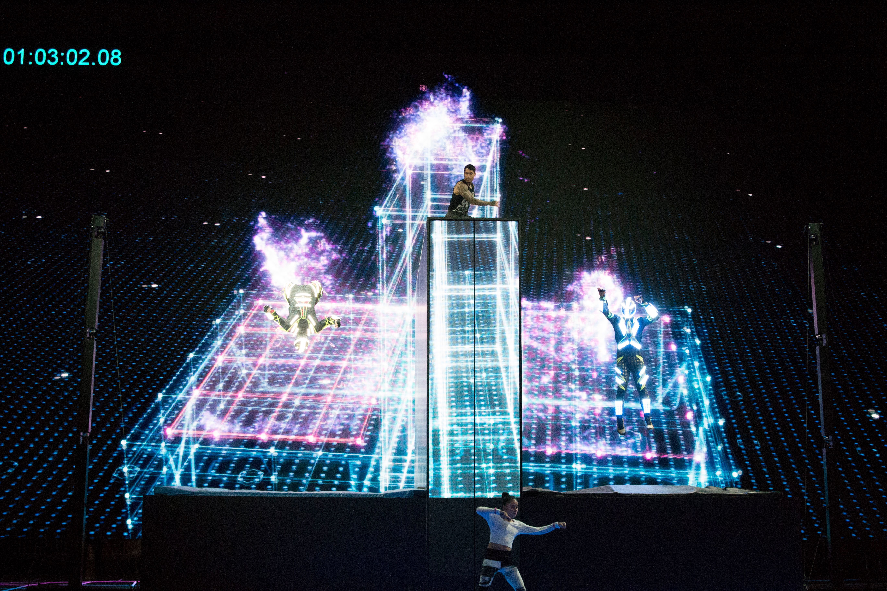

From the Show


On stage at CES.


Real-time volumetric visualization of acrobats on an 85'×40' LED wall — zero latency, zero margin for error, broadcast live to millions.
"We need something that will stop the room — and actually demonstrate what RealSense can do, live, in front of everyone."
Intel's CES keynote is one of the most-watched tech events of the year. The brief was to create a live onstage performance moment that would make RealSense depth sensing technology immediately tangible to a non-technical audience — tens of thousands in the room, millions watching the broadcast.
We partnered with Zero Gravity Arts and All of it Now to design and deliver a live performance in which trampoline acrobats were captured in real time by a multi-camera RealSense array, rendered as volumetric point cloud figures, and displayed across an 85-foot-wide LED wall — with zero latency, live, while Brian Krzanich was onstage.
The show could not stop. The pipeline had to work — not probably work, not almost work. Any visible lag between performer and rendering would break the illusion and undermine the entire demonstration. An early approach using Optitrack motion capture suits proved too fragile under live show conditions: suits malfunctioning, tracking inconsistencies, complexity that didn't survive contact with reality.
The pivot to raw RealSense point cloud data solved the reliability problem but introduced a new challenge: streaming, processing, and rendering dense depth data across a 40-foot stage in real time, at the quality required for a global broadcast. We had three days of rehearsals to validate the pipeline. That was the entire margin.
01 — Initial R&D
The first approach used Optitrack motion capture suits to track performers and render their skeletal data in real time. Under controlled conditions it was promising. Under live show pressure — quick costume changes, performers not seated still, the chaos of a full production — the system proved unreliable. We killed it before it could fail onstage.
02 — Pivot to Point Cloud
We rebuilt the pipeline around raw point cloud data from a multi-camera Intel RealSense D435 array. No suits, no markers, no infrastructure the performer had to wear or maintain. The cameras see the performers directly. A custom processing layer stitched the camera volumes and fed a continuous point cloud stream into Unity VFX Graph for rendering.
03 — Pipeline Validation
Three days of full-dress rehearsals with the Zero Gravity Arts acrobats on the actual CES stage. Every edge case was stress-tested: performers overlapping, multiple depth cameras in conflict, the latency budget at different render complexities. By day three the pipeline was solid enough that we were making aesthetic choices rather than debugging.
04 — Live Show
The show ran exactly as rehearsed. Acrobats flew across the stage; their volumetric point cloud representations flew across 85 feet of LED wall in real time. LED floor animations tracked performer positions. Brian Krzanich walked through the system on stage. Forbes described it as the most visually rich performance ever seen at a tech show.

The demonstration ran flawlessly. The point cloud rendering of the acrobats drew a visible reaction from the audience — the moment people understood what they were seeing, that the figures on the wall were being generated live from the performers in front of them, was immediate and visceral.
Forbes called it "the most visually rich performance ... ever seen at a tech show — colorful, complex and stunning." The clip became the most-shared moment from the entire CES keynote and directly drove commercial interest in the RealSense D435 product line in the months that followed.
"The most visually rich performance I've ever seen at a tech show — colorful, complex and stunning." — Forbes
Work with us
Tell us about your show — venue, timeline, what you need the audience to feel. We'll respond within 24 hours.